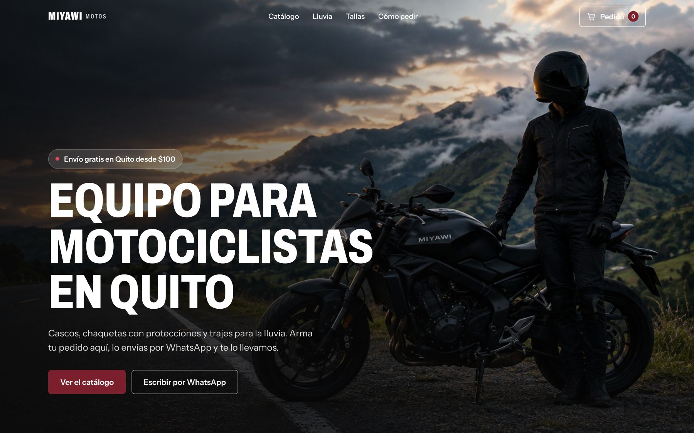
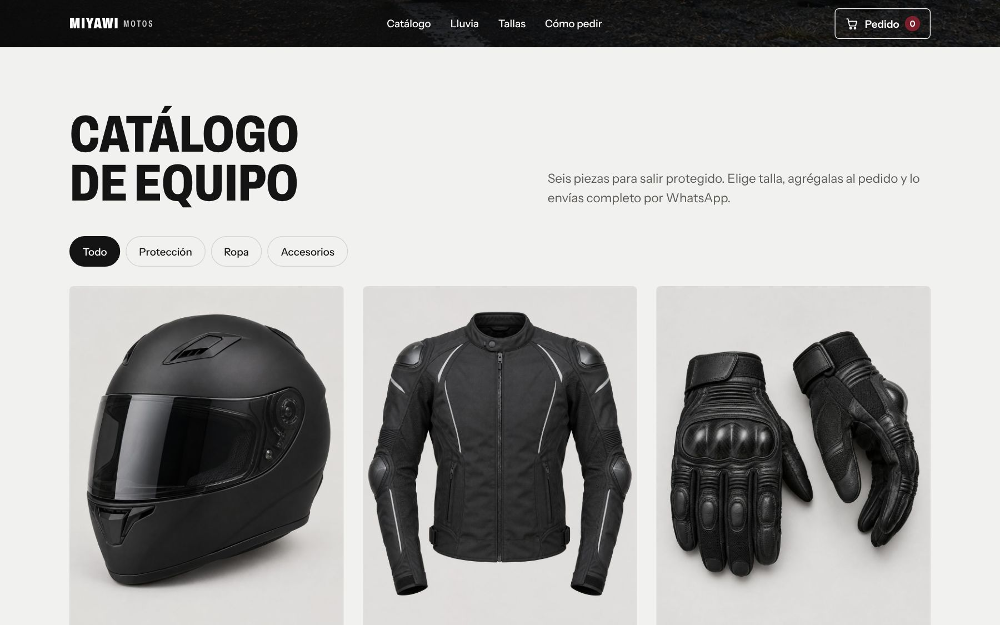

Tienda online · Demo
Miyawi Motos
Tienda de equipo para motociclistas en Quito. El cliente elige talla, arma su pedido y lo envía por WhatsApp con el total calculado.
- Catálogo con filtros y selector de talla
- Carrito con barra de envío gratis desde $100
- Fotos de producto generadas con IA en Figma